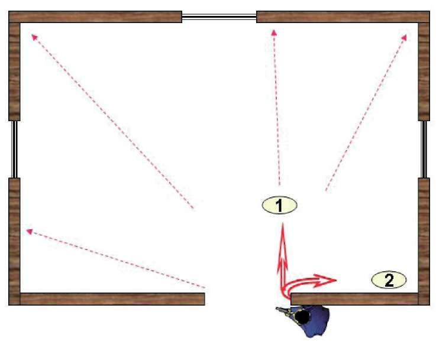

BÖLÜM
OPERASYON VE OPERASYON TEKNİKLERİ
4. GİRİŞ TEKNİKLERİ
4.1. Köşe Açma Teknikleri
4.1.1. Sağ Yöne Doğru Köşe Açma Tekniği
Atışa hazır olan silahınızla beraber açacağınız yöndeki köşeye ters orantılı (sağ yönde sol ayak önde, sol yönde sağ ayak önde) olarak sol ayağınızı, açacağınız köşenin yönünden bakıldığında gözükmeyecek şekilde öne çıkarıp, öndeki ayağınızın üzerinde vücudunuzun belinden ani bir refleksle yaylanıp köşeyi açın. Ayrıca köşe açma tekniğinde vücudunuzu sakladığınız gibi atışa hazır olan silahınızı da mümkün olduğunca göstermemeye dikkat edin. (Bakınız Şekil-23) Şekil-23.) Sağ yöne doğru köşe açma tekniği 4.1.2. Sol Yöne Doğru Köşe Açma Tekniği
Atışa hazır olan silahınızla beraber açacağınız yöndeki köşeye ters orantılı (sağ yönde sol ayak önde, sol yönde sağ ayak önde) olacak şekilde sağ ayağınızı, açacağınız köşenin yönünden bakıldığında gözükmeyecek şekilde öne çıkarıp öndeki ayağınızın üzerinde belinizden ani bir refleksle yaylanıp köşeyi açın. (Bakınız Şekil-24)